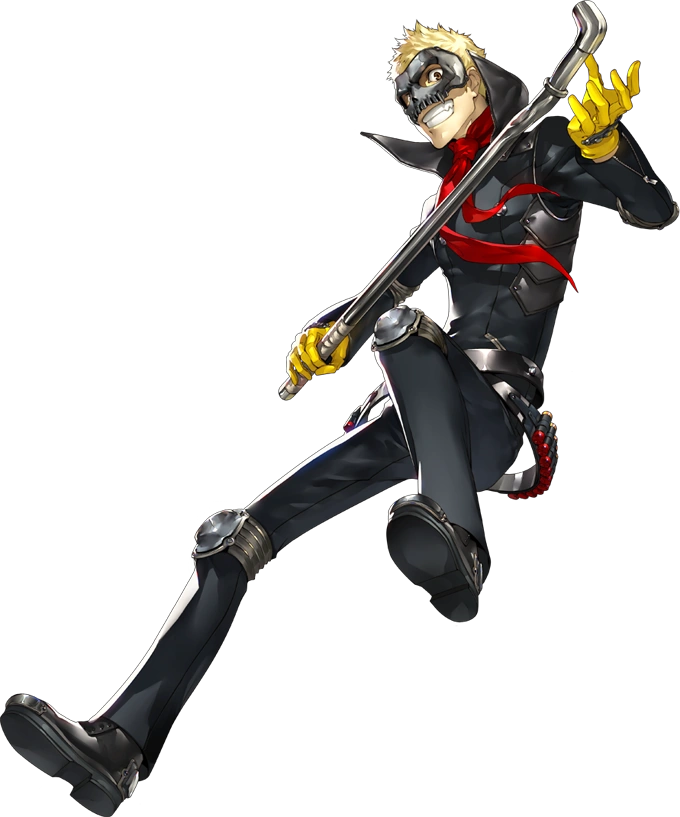
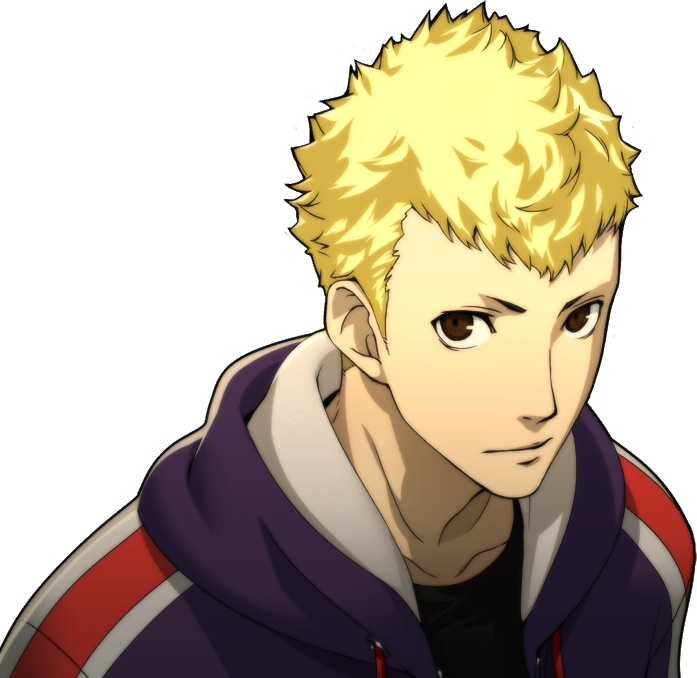

Introduction
Ryuji is the third unlockable charcter that you get in Persona 5 Royal. He is the person who had stumbled onto the castle with Ren. He was a former track star at his highschool but quit due to Kamoshida's harsh practices. He is now a part of the Phantom Theives as the right-hand man of Ren and is the Phantom Theieves' charge commander
Persona Unlocking
Ryuji unlocks his Persona later on when they enter the castle with Ren and Morgana. While they infiltrate the castle they find them selves in the the main room confronted by Kamoshida and his gaurds. Joker and Morgana can't defeat all the gaurds and Kamoshida starts taunting Ryuji. This then causes Ryuji to unleash his Persona CaptainKidd.
Gallery

Captain Kidd
Skull(apperence in metaverse)
Ryuji Sakamoto
Facts about Ren Amamiya
- Code Name: Skull
- DOB(date of birth): July 03, 1999
- Age: 17
- Height: 170 cm (5'7")
- Primary Tool: Bludgeons
- Secondary Tool: Shotguns
- Arcana(personality): Chariot
- Persona(asssistant): Captain Kidd